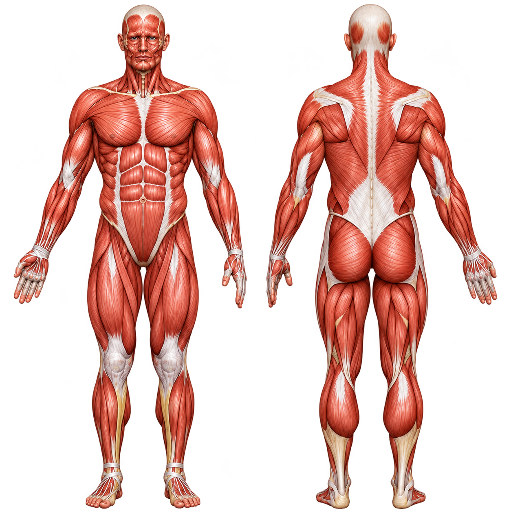

Presses and flyes for the upper, mid, inner, and lower chest.

The top part of the pec, trained best with incline angles.
The main part of the pec, built with flat presses and flyes.
The area near the sternum, trained by squeezing the hands together.
The lower pec fibers, hit with decline and dip movements.
 Muscle
Muscle